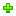

2 - Set the parameters of your files
The second step lets you set the properties for each of your packs (files) and even organize them by Groups/Install groups. You add a new group using the  button at right, and fill its name then you may use the button at left, or Drag and Drop them to a group at right.
In a case of 'Recursive Scan' with Folder/Group option enabled, you'll see packs added to Groups relative to folder names.
Then you start setting your packs..
- A pack is displayed by its 'name' and can't have the same name as another Pack or Group.
- A 'required' pack can't be disabled on install.
- A 'selected' pack is preselected on install.
- A 'hidden' pack will not show up in the packs selection panel
- A Pack may 'depend' on another Pack or a Group of them so it won't be installed unless all dependencies are selected.
- Packs can be part of one or many 'install groups' separated by comma.
- A 'shortcut' can be created for a pack to access it directly.
- A Pack is either 'executed' during install process, 'copied' entirely or 'extracted' to 'install path'.
- The 'Install path' of a pack is relative to the global install path of setup (Tweak tab).
Once all your packs and groups set, you press  Next..
Next..